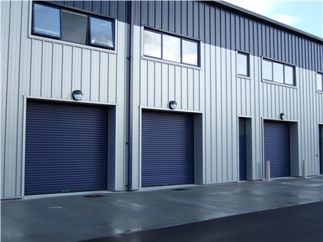

Double Skin Rolling Shutters
Bengal Rolling Shutters: Double Skin Rolling Shutters
Bengal Rolling Shutters’ Double Skin Rolling Shutters are designed for daily use, offering high efficiency, durability, and long-term economy. Available in steel, these shutters provide multiple performance advantages and are custom-made to meet the specific operational needs of each customer.
Key Features
Durability
Made from galvanized special steel, these profiles are highly resistant to damage during transport, installation, and regular operation. They are available with or without color coating, and the facetted inner profile face matches the micro-profiled outer face.
Thermal Insulation
Double skin door profiles feature minimal thermal bridges and fine-pored PU rigid foam infill, offering excellent thermal insulation compared to many conventional rolling shutter systems.
Acoustic Insulation
The shutter curtain and sealing technology effectively reduce noise transmission from both outside and inside, improving acoustic comfort in commercial and industrial spaces.
Sealing
Our double-skinned rolling shutters include comprehensive sealing, including a frost-proof flexible lip seal on the bottom edge, a brush seal at the lintel, and fine bristle seals in the side guides.
Stability
Robust wink locks and deflection-resistant bottom profiles ensure that the shutter can withstand high wind loads, providing dependable stability and reliable performance in demanding conditions.
Conclusion
Bengal Rolling Shutters’ Double Skin Rolling Shutters are an ideal choice for those seeking durability, efficiency, and long-term value. With excellent thermal and acoustic insulation, comprehensive sealing, and robust structural stability, these shutters are engineered to meet the highest standards and specific customer requirements.